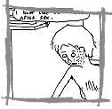
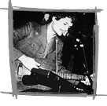

|
 |
 |
 |
| |
|
 |
Jeffrey Brown believes graphic novels are “probably the least tapped medium in the arts today,” he says. “People are beginning to realize that comics are a powerful language.” Brown explores and intensifies that power through his trio of graphic novels, “Clumsy,” “Unlikely,” and his latest publication, “AEIOU,” all of which explore the complexities of heartache and loss through stark, sparse pen-and-ink panels and soul-baring storylines. Brown finds that the sharing of the personal self helps the artist to connect with his audience, and his works push past what he refers to as “thinly veiled metaphor and fictionalization,” which is completely true, as one character voices the simple line “I don't like being alone after sex,” for example. How true-to-life are they? Each issue of AEIOU, the final chapter in the trilogy, comes with a piece of a note or letter from the girl. That's right, the girl.
More info: http://www.margomitchell.com/thc/jb.htm |
| |
|
|
Carolyn Brundage has her hands full. She started
ten years ago as a nationally-ranked member of DECA, Inc., an association
of marketing students, and has steadily become one of the nation's leading
fashion advisers. Her ideas and advice are commonly sought out in the
press; she has appeared in Chicago Scene, TCW and UR Magazine, to name
just a few. She brought her fashion sensibilities to the Web and founded
Chicago Design Group, an organization dedicated to Web design, hosting,
maintenance and promotion. CDG's clients run the gamut from the Chicago
Fashion Foundation, YM Chicago, and Salon Mor. In addition to this already-loaded
plate, Brundage runs Chicagobeauty.com, a product of the Chicago Design
Group, a Web site that rates and locates salons in the Chicagoland area.
As if all this weren't enough, Brundage offers advice to the fashion conscious
and hopeless alike in a weekly column that appears in the Chicago Sun-Times'
RedStreak edition. Brundage lives in Chicago with her husband, Brian,
and her two-year-old son.
More info: http://www.chicagobeauty.com/carolyn_brundage.htm |
| |
|
|
How great would it be to work for Saturday Night Live? After years on the comedy circuits, Second City alum Liz Cackowski is about to find out. As of Feb. 24, 2004 , she's headed to NBC's flagship sketch comedy show as a staff writer. Cackowski was a player in the ComedySportz theatre beginning in February 2001 and made the move to the Second City in September 2003. She obviously didn't get to spend much time with the theatre that launched the careers of such notables as Dan Aykroyd and Bill Murray, but a Saturday Night Live invitation isn't something to be taken lightly. But she's no stranger to putting in the time to get the job done. “Between rehearsing and performing, I'm looking at some 60-hour weeks,” Cackowski said of her stint at Second City . In addition to her Chicago experience, she also worked on the Chicago-style sketch comedy troupe Boom Chicago in Amsterdam .
More info: http://www.improvisation.ws/mb/showthread.php?t=22676 |
| |
|
|
The mark of a critical and valuable columnist
is in the details. And the details. Besides working on political organization
drives, writing Legion: For They Are Many, a book on the Cook
County Democratic Party, and endlessly researching Chicago cityscape and
history, Ramsin Canon writes as a political columnist for Gapersblock.com.
At 22, the language found in his columns is decisive and his understanding
of political events in Chicago is researched, informed, and comprehensive.
What's critical to Ramsin is “finding truth about how each local political
organization works … and how democracy has faded in favor of a feudal
organizational system in Chicago.” While he has covered events such as
the hired truck scandal of earlier this year, where the city paid drivers
for doing little or no work, and issues like “The Gentrification Myth,”
a series of essays, Ramsin says that his most demanding writing is on
the current Illinois Senate race. In the tradition of Chicago reporters,
Ramsin Canon's observations, much like Chicago politics itself, strikes
the reader as hard, a bit gritty, sometimes hilarious, and unyielding
– commentary not to be taken with a grain of salt.
More stuff: http://chicagolife.blogspot.com/2004_01_25_chicagolife_archive.html |
| |
|
 |
For most of us, the 8-bit video game revolution ended sometime around 1995. But, keeping pace with the current trend of making yesterday's consumables the new Hip Thing, Mark DeNardo and a small cachet of musicians are retrofitting the Game Boy as a music machine, creating beeps and loops for a generation weaned on cartridge music. In an interview with Wired , the 29-year-old DeNardo discussed the relative merits of his unlikely music source. “The digital medium may have more accuracy, but it doesn't have as good a vibe,” he said. “But when you can hear the sequence and feel it, it's like listening to a live band rather than someone singing along with a digital karaoke machine.” His lyrics tend more toward the superficially fun: “We're going to a bad party / drink beer and meet ladies,” he chants over a loop that wouldn't be out of place as the music to a boss in Super Mario Bros. For the video game generation, it's the perfect mix of kitsch and modern.
More info: www.markdenardo.com |
| |
|
|
| ad |
|
| comments: 30 under 30 |
|
subject: One day
date: 04.01.2004
name: double edge sword
comment:
These people make me happy to know that so much can be done at a young age but at the same time they make me feel like I've done so little in life. That's a good thing |
| |
subject: Sho!!!
date: 04.01.2004
name: LUC Grad
comment:
Sho made the list! Go LUC! |
| |
subject: 30 under 30
date: 04.01.2004
name: wookiee
comment:
that guy from the watchers should not have made your list. many of these people are actually doing great things at a relatively young age. he's in a sub-par rock band that will no-doubt go into the same bin as jesus lizard and red red meat as bands nobody outside ever heard of. |
| |
subject: wookiee
date: 04.01.2004
name: chuck
comment:
Do I smell jealousy? |
| |
subject: these people are cooler than me
date: 04.02.2004
name: boo
comment:
isn't it funny to think that when we are young we expect to do so much by the age of 24. And then life happens... |
| |
subject: 30 under 30
date: 04.15.2004
name: Polly
comment:
Ramsin Canon is amazing. |
| |
subject: 30 under 30
date: 05.12.2004
name: Blueeyes
comment:
I dont get the point with the Musician guy. |
| |
subject: mark denardo
date: 10.18.2004
name: a big fan,really.
comment:
wow. i have to say, denardo sure knows how to make a bad impression as a person, but i guess someone likes him... strange. |
| |
subject: above post
date: 06.16.2005
name: blueyes
comment:
Oh, come on, you have a grudge and make comments that are out of line, go away |
| |
| |